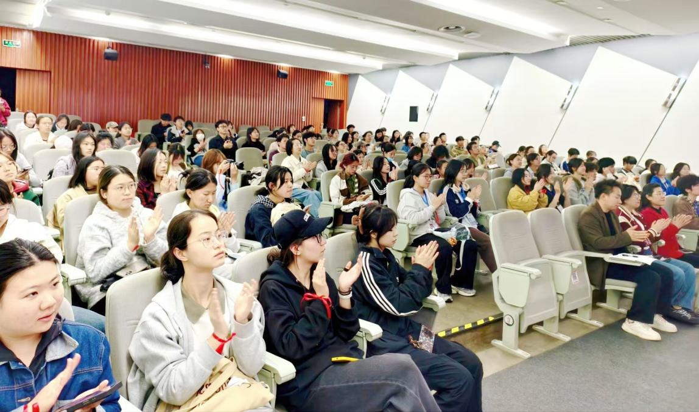

学院通知 · 校园活动
图书馆志愿者队第二十一届春季动员大会举行
发布时间：2026-04-10 10:38:12
2026年3月27日晚，四川大学图书馆志愿者队第二十一届春季动员大会在江安图书馆明远学堂举行。本次活动旨在帮助春季招新加入的志愿者尽快了解队伍情况和工作内容，增强团队认同感与责任意识。图书馆党委副书记兼纪委书记、副馆长杜小军，文献服务中心副主任、图书馆志愿者队指导老师淳姣，图书馆专项志愿者队沐心钢琴志愿者队指导老师赵英宏，以及图书馆志愿者队学生骨干代表参加活动。 会上，杜小军老师致辞。她对新加入的志愿者表示欢迎，希望大家充分利用图书馆资源平台，在服务师生的过程中提升能力、锻炼本领，以认真负责的态度参与各项志愿服务工作。 随后，第二十一届图书馆志愿者队总队长林乐轩同学介绍了图书馆志愿者队的发展情况及各部门主要职责，帮助新队员进一步了解队伍组织架构和工作内容。活动中，全体志愿者进行了集体宣誓，进一步明确了责任意识和服务意识。 在交流分享环节，分队长代表余嘉琦同学和小组长代表王禹浩同学结合自身经历，分享了参与图书馆志愿服务的体会与收获，介绍了在志愿服务中提升自我、服务同学的实践经验，为新队员更好融入团队、参与工作提供了参考。 淳姣老师在总结发言中表示，阅读与思考不只是大学生的必备素养，更是贯穿一生的精神修行。他希望同学们在参与志愿服务的同时，注重培养深度阅读、独立思考的阅读习惯和学习能力，保持对经典与新知的敬畏与探求，在字里行间拓宽视野、涵养底蕴，把服务实践与个人成长结合起来，不断提升综合素养。 本次春季动员大会加深了新队员对图书馆志愿者队的了解，增强了团队凝聚力，为后续志愿服务工作的有序开展奠定了基础。 文字：四川大学图书馆志愿者队 白抒逸 图片：四川大学图书馆志愿者队 唐英峻 杨艺馨 张佳睿 单子茹 贾小南 白抒逸
